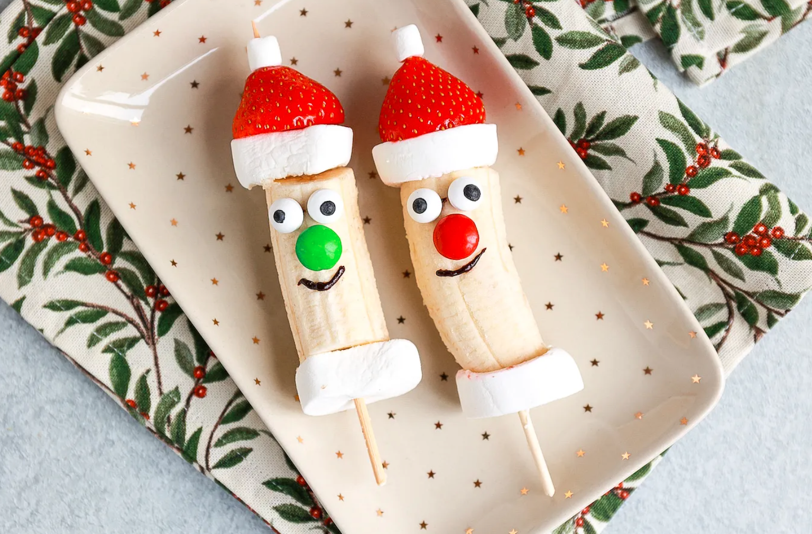

Santa's Bananas

Description
A fun little project for kids who'd like to make their own contribution to Christmas dinner.
Ingredients
- 4 bananas
- 8 strawberries
- 16 marshmellows
- 8 (or 24) mini marshmellows
- 16 sugar eyes or small blueberries
- 4 red and 4 green m&m's
- 8 wooden or bamboo saté-sticks
- 1 glaze stick
Steps
- Cut the bananas in half along the horizontal axis
- Put a marshmellow on a saté-stick followed by half of a banana, another marshmellow, an upside-down strawberry and a mini mashmellow
- Use the glaze stick to put small dots where the eyes and nose should go
- Put a sugar eye where each eye should go. If you don't have sugar eyes, you can also use small blueberries for the eyes.
- Put an m&m where the nose should go
- Draw a mouth with the glaze stick
- Repeat steps 1-6 until all ingredients are used
Home